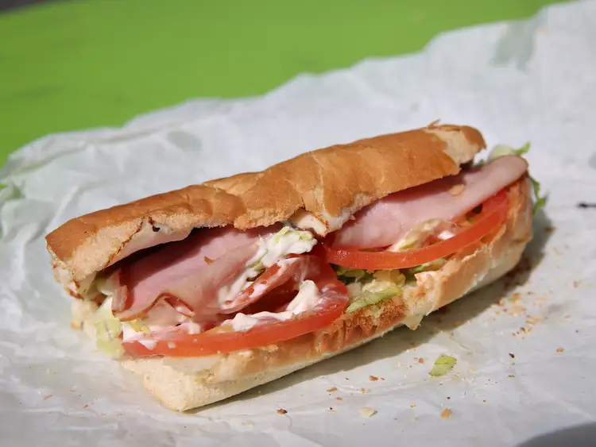

OUR COMPETITION
Title description, Dec 7, 2017
OTHER fast food joints give you misleading pictures of their "food" on advertisements.
Causing customers universally around the world to weep upon the sight of deflated and sad burgers.
As this evidence shows:

HOW WE'RE BETTER FOR SOME REASON
Title description, Sep 2, 2017
uS oN tHe OtHeR hAnD!!
We proudly show how depressed our "food" looks! And we this by just using pictures our "food" taken by none other than you, our stupid customers!
We'll give you extra dry lettus on the side that you'll have to try not to make a mess with for no extra payment
 We'll give you sandwiches that WANTs to fall apart, just like the entirety of your life! And ESPECIALLY just like insides once you're done eating it!
And try our vegiarian options if your pretending to a pretentious activist or attension or just some weirdo in general! Actually I don't even know if this IS a veggie burger! Maybe our staff was so incompetent that they actually forgot to put the paddie on! I don't know!!!
Ah yes, this ad showcases one of our signiture condiments, y e l l o w b i l e .
A lot of people know not to judge books by covers, but the inside of THIS book's contents are pretty much what the cover entailed. What's that white bit on the rim of the left burger--you probably aren't asking? I don't know, maybe it's normal, maybe it's not. What did you honestly think that we would know how "normal food" is supposed to be? Ha! Hilarious...